Monograph · 09 · Evaluation
Thesis pipeline · measure · results
Evaluation
Owns visual + quantitative results on identical captures: RealityCapture vs Nerfacto vs Splatfacto, hard materials, polarization, outdoor comparisons. Must not present unfinished inverse sphere experiments as results. Done when a hiring manager can see the outcomes without opening the PDF.
Headline metrics
Same multi-view inputs. Photogrammetry for geometry gates; neural methods for novel views — especially where feature matching dies.
Studio dataset · what we captured
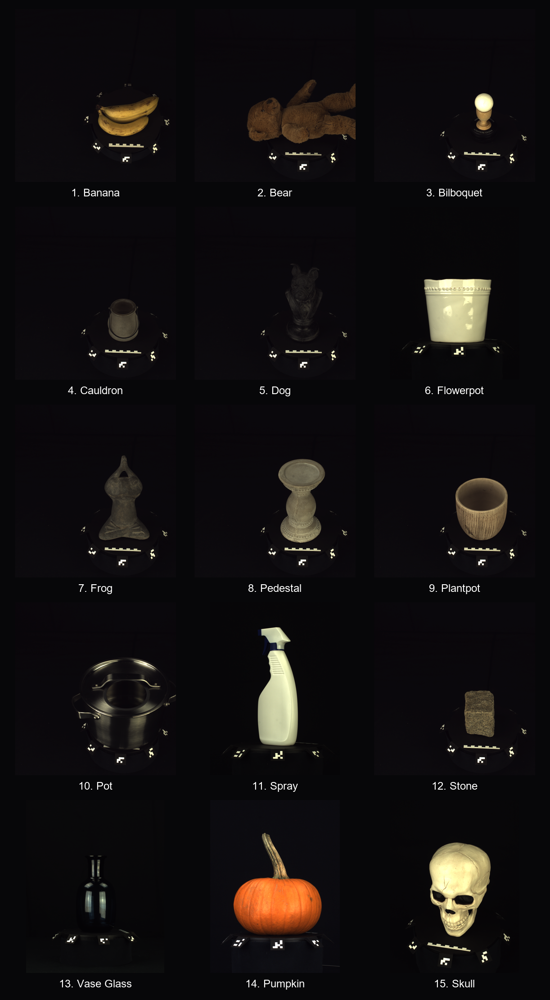
Dataset 15 objects · 12 cams × 36 steps · diffuse → glossy → glass. Deliberate failure cases included.

Alternate overview plate from thesis figures.
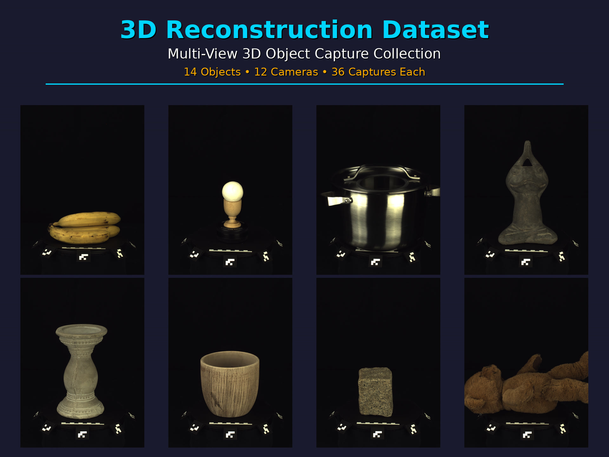
Public release Internet Archive studio dataset card.
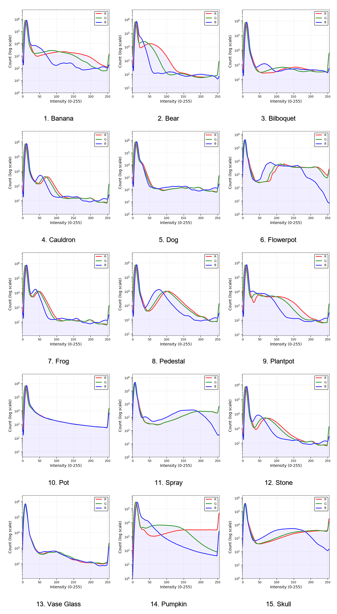
Intensity histograms. Material-driven dynamic range — not one easy texture class.
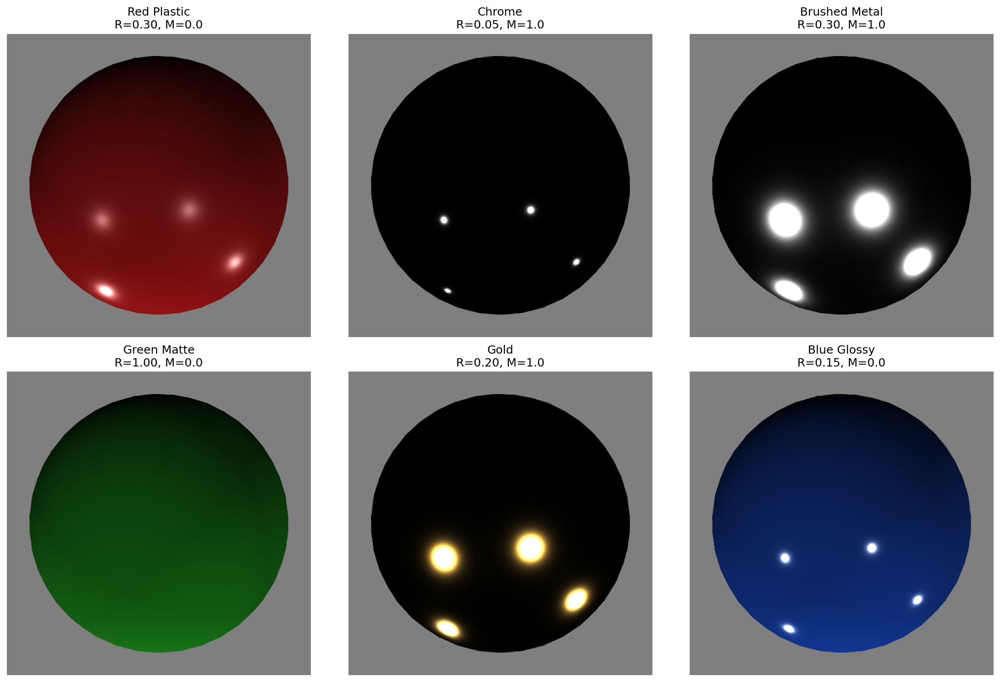
Material spread used in evaluation storytelling (thesis figure).
System plates
Reconstruction pipeline plates
End-to-end evidence: capture → alignment → neural / photo outputs.
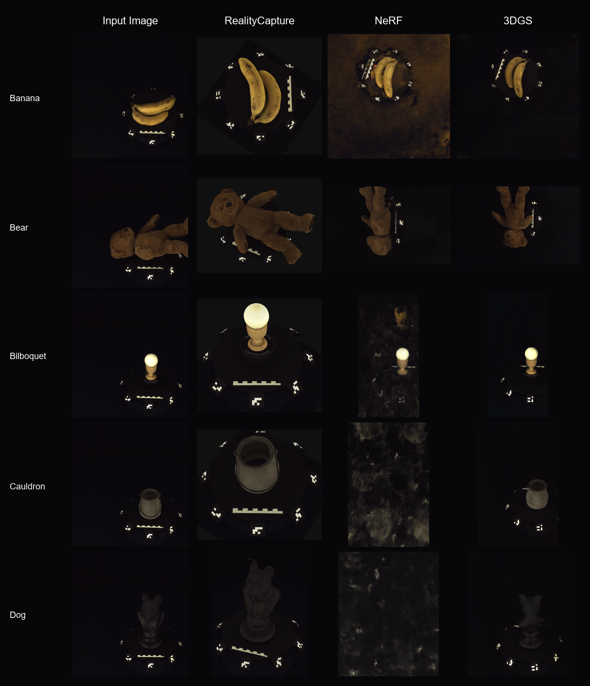
Thesis figure Pipeline overview · part 1.
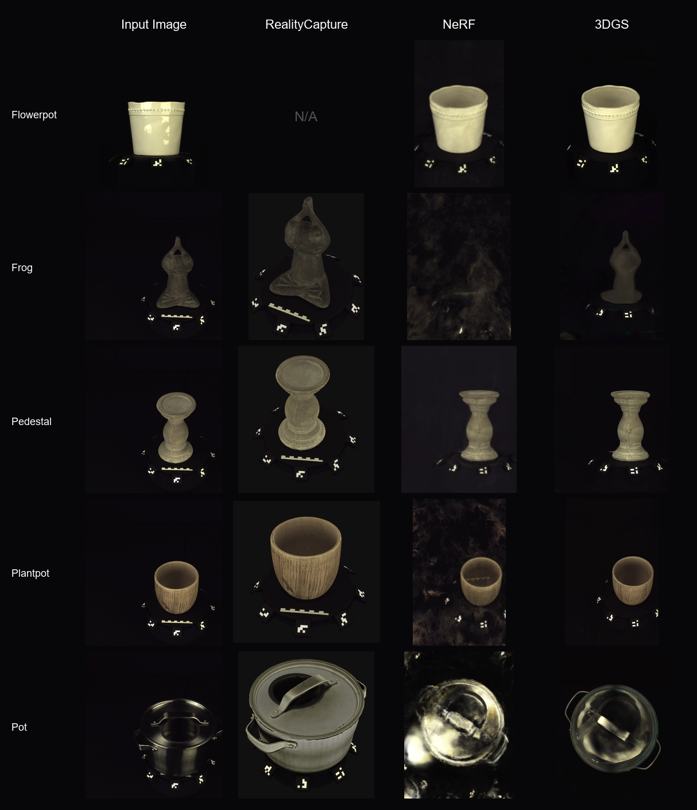
Pipeline overview · part 2.
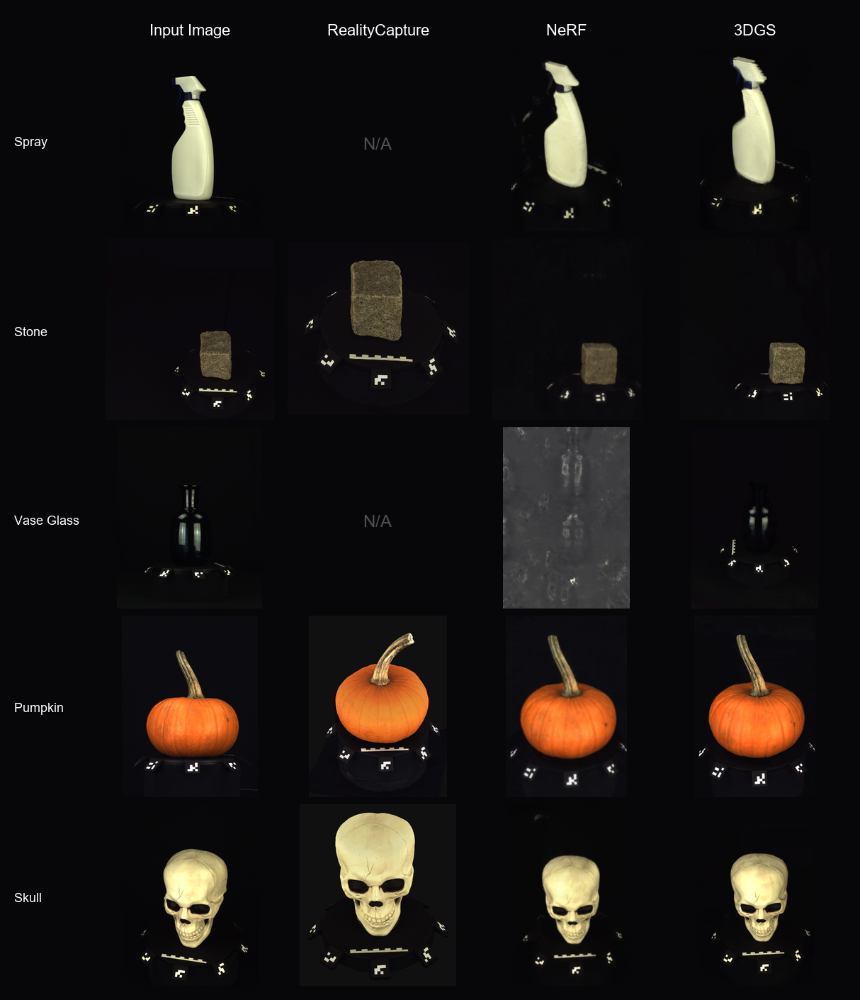
Pipeline overview · part 3.

Method matrix. Photogrammetry vs neural outcomes on shared inputs.
Method compares · play the loops
Each pair is the same object / same capture. Left column Nerfacto, right Splatfacto (where both exist).
Nerfacto Metal pot
Splatfacto Metal pot — specular highlights track the view
Nerfacto Banana (easy diffuse baseline)
Splatfacto Banana — sharper high-frequency surface
Nerfacto Glass vase (refractive stress case)
Splatfacto Glass vase — still synthesizes views where mesh fails
Hard materials · photo vs neural story
Spray (textureless white) and Vase Glass (refractive): RealityCapture cannot lock trustworthy dense geometry. Neural methods still produce usable novel views. Specular metal dropped RC alignment into ~88–92%.
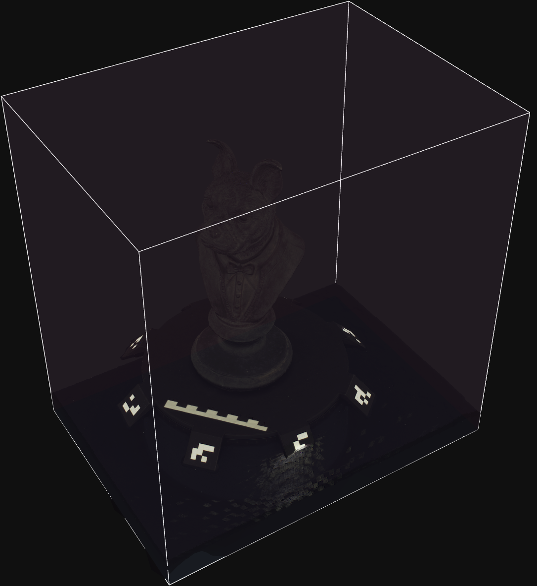
Capture / render example (dog).
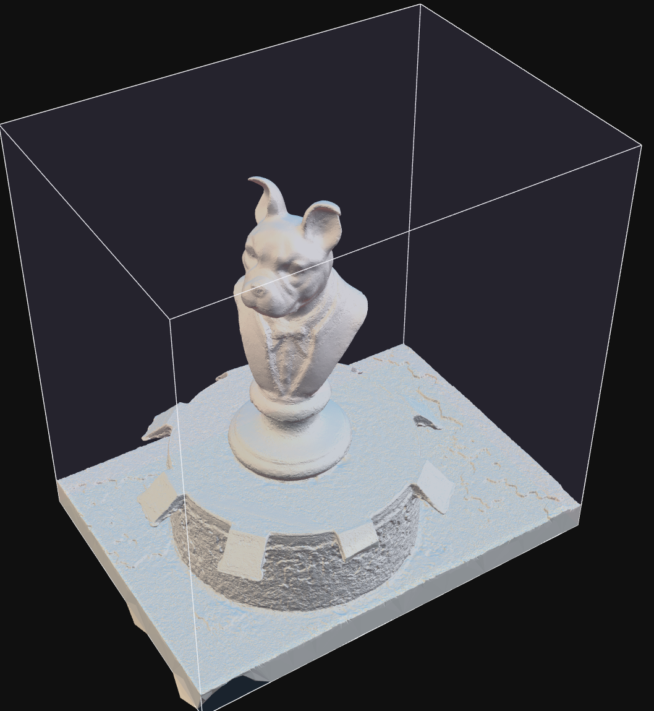
Photogrammetry mesh plate for comparison.
Polarization validation
Cross-pol strips specular peaks so classical matching can recover glossy surfaces. Capture physics still matters.
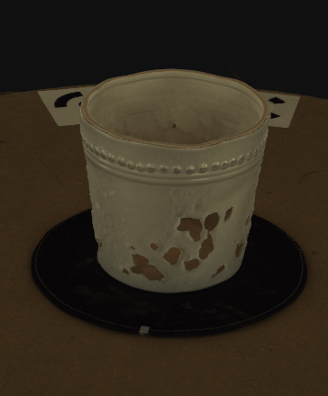
Without cross-pol — specular-heavy failure mode.
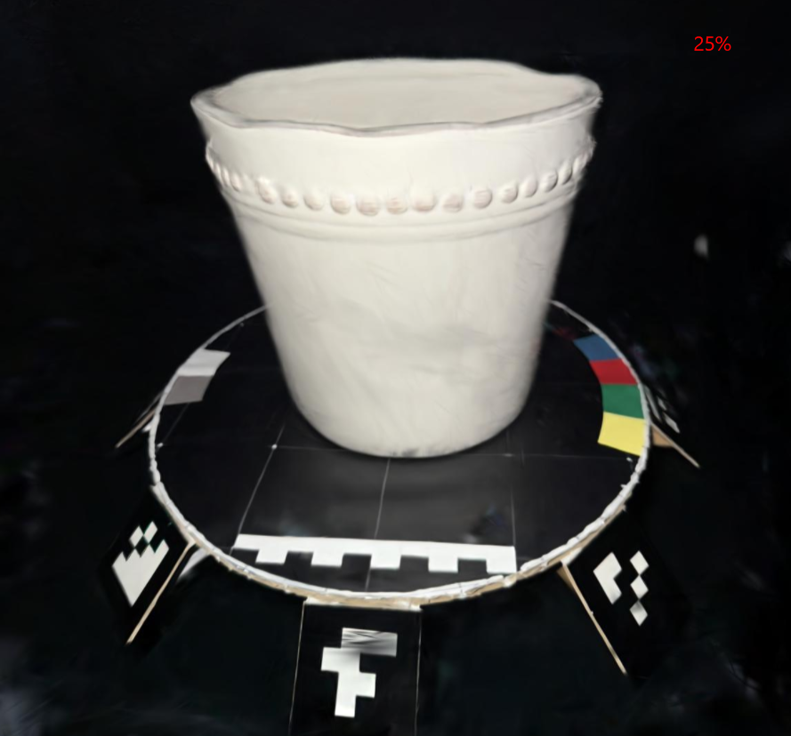
With cross-pol — specular suppressed.
Outdoor results · Gränsö
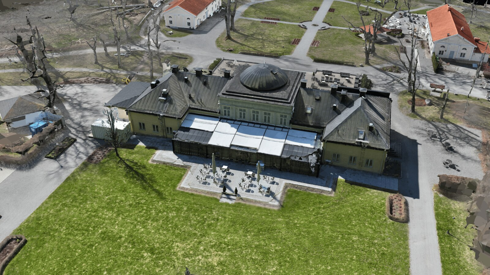
RC aerial context.
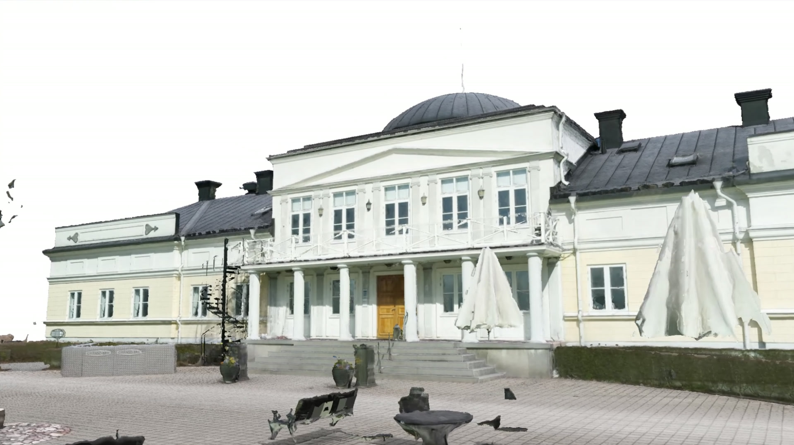
RealityCapture entrance / facade detail.
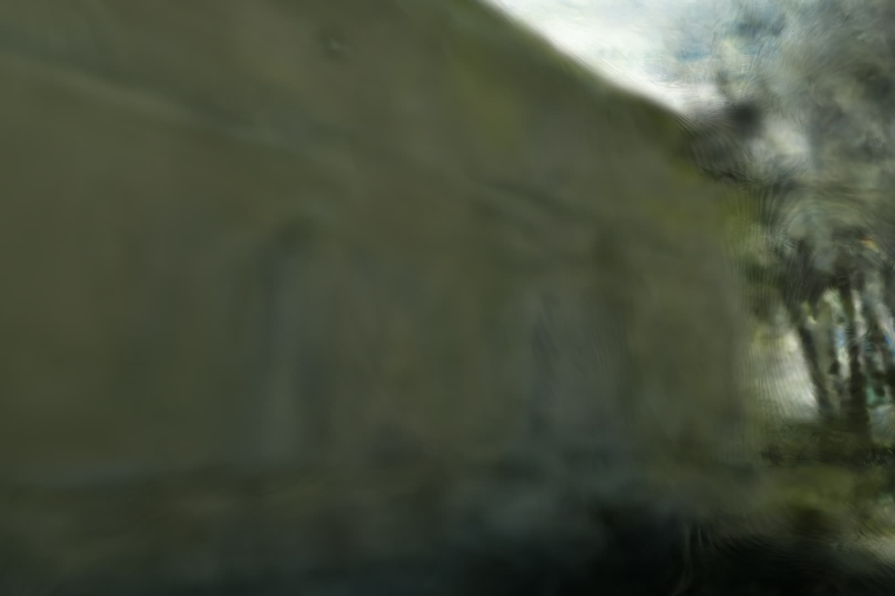
Nerfacto outdoor still.
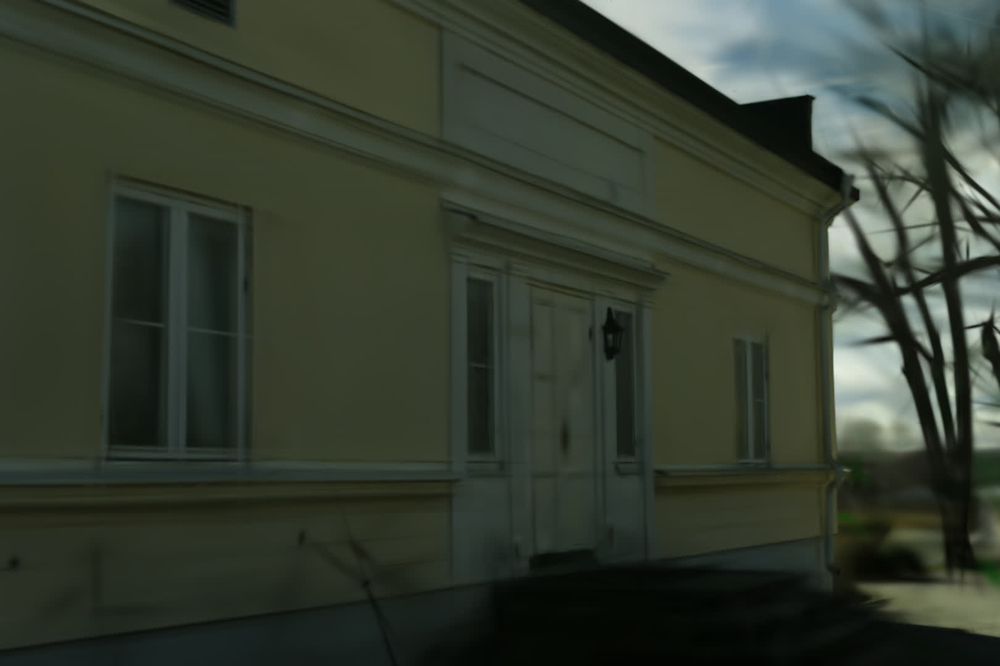
Splatfacto outdoor still.
Neural outdoor multi-view sections plate.
Flythrough RealityCapture Gränsö reconstruction.
Inverse-rendering gold/matte/chrome sphere grids from slides were exploratory and did not complete as thesis contributions. They are not result plates above.